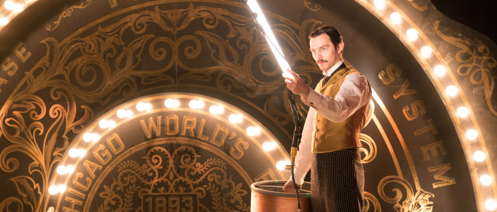

En 1886, Tesla fundó su propia compañía, la Tesla Electric Light & Manufacturing. Los primeros inversores no estuvieron de acuerdo con sus planes para el desarrollo de un motor de corriente alterna y finalmente lo acabaron relevando de su puesto en la compañía.
Pero Tesla no se dio por vencido y trabajó como obrero en Nueva York de 1886 a 1887 para poder sobrevivir y ganar dinero para su próximo proyecto. En 1887, construyó un motor de inducción sin escobillas, alimentado con corriente alterna, que presentó en el American Institute of Electrical Engineers (Instituto Americano de Ingenieros Eléctricos) en 1888. Ese mismo año desarrolló el principio de su bobina, y comenzó a trabajar con George Westinghouse en la Westinghouse Electric & Manufacturing Company's en los laboratorios de Pittsburgh. Westinghouse escuchó con atención sus ideas sobre sistemas polifásicos, que podrían permitir la trasmisión de corriente alterna a larga distancia, y apostó por él.
En 1893, Tesla trabajó con Westinghouse en el desarrollo de un proyecto para conseguir el suministro eléctrico a la ciudad de Bufalo aprovechando la fuerza de las aguas de las cataratas del río Niágara. En 1895, un incendio en el laboratorio de Tesla en Nueva York causó pérdidas incalculables a la ciencia, pues además del edificio se destruyeron todos sus proyectos. Pero nada podía con Tesla. En 1898, se presentó a la primera Exhibición Eléctrica que se realizó en el Madison Square Garden de Nueva York con un invento llamado "Teleautomaton". Se trataba de un bote en miniatura, controlado a distancia por radio. Tesla intentó vender su idea al ejército estadounidense, pero en aquel entonces la marina mostró poco interés. Tampoco constó como inventor del aparato. Este mérito se lo llevó el ingeniero español Leonardo Torres Quevedo, quien patentó en 1903 el "Telekino", que se consideró el primer aparato de radiocontrol de la Historia.
